ACID capabilities of Couchbase were covered in a previous post: ACID Properties and Couchbase. In this blog post, we’re going to use that foundation to build something like an atomic, distributed transaction.
A Brief Recap
In part 1, we saw that the ACID properties actually are available in Couchbase, but only at the single document level. For many use cases where data can be stored together in a denormalized fashion, this is usually adequate. However, in some cases, denormalization into a single document alone isn’t enough to satisfy requirements. For those relatively small number of use cases, you may want to consider the example being laid out in this blog post.
Just a note of warning going in: this blog post is a starting point for you. Your use case, technical needs, Couchbase Server’s capabilities, and the edge cases you care about will all vary. There is no one-size-fits all approach as of today.
Multi-document atomicity example
We’re going to focus on something relatively trivial to keep the code as simple as possible. For more advanced cases, you can build on this code and possible genercize it and tailor it as you see fit.
Let’s say we are working on a game. This game involves creating and running farms (sounds crazy, I know!) Suppose in this game, you have a barn which contains some number of chickens. Your friend also has a barn, containing some number of chickens. At some point, you might want to transfer some chickens from your barn to a friend’s barn.
In this case, data normalization probably will not help. Because:
-
A single document containing all barns is just not going to work for a game of any significant size.
-
It doesn’t make sense for your barn document to contain your friend’s barn document (or vice versa).
-
The rest of the game logic works just fine with single-document atomicity: it’s just this one chicken transfer portion that’s tricky.
To begin with, all we have are two "barn" documents (Peterson Barn and Kirk Barn):
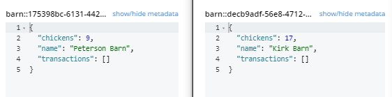
This method I’m going to demonstrate to transfer chickens is called a "two-phase commit". There are six total steps to show you with various of code. The full source code is available on GitHub.
It occurred to me after taking all the screenshots and writing the code samples that chickens live in coops, not barns? But just go with me on this.
0) Transaction document
The first step is to create a transaction document. This is a document that will keep track of the transaction through the various steps and the state of the transaction. I’ve created a C# Enum with the various states that will be used. This will be a number when stored in Couchbase, but you could just as easily use strings or some other representation if you’d like.
public enum TransactionStates
{
Initial = 0,
Pending = 1,
Committed = 2,
Done = 3,
Cancelling,
Cancelled
}It will start out in a state "Initial". Going into this transaction, we have a "source" barn, a "destination" barn, and some number of chickens to transfer.
var transaction = _bucket.Upsert(new Document<TransactionRecord>
{
Id = transactionDocumentKey,
Content = new TransactionRecord
{
SourceId = source.Id,
Source = source.Value,
DestinationId = destination.Id,
Destination = destination.Value,
Amount = amountToTransfer,
State = TransactionStates.Initial
}
});Let’s peek in on the data again. Now there are three documents. The transaction is new, the barn documents are unchanged so far.
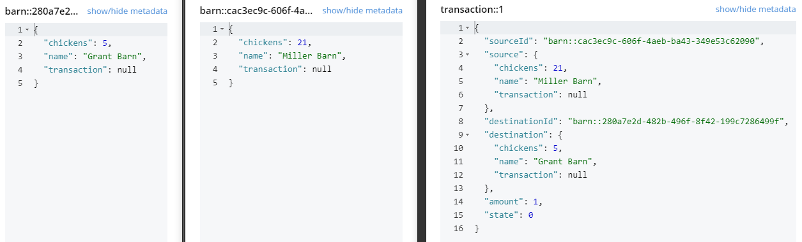
1) Switch to pending
Next, let’s put the transaction document into a "pending" state. We’ll see later why the "state" of a transaction is important.
UpdateWithCas<TransactionRecord>(transaction.Id, x => x.State = TransactionStates.Pending);I’ve cheated a little bit here, because I’m using an UpdateWithCas function. I’m going to be doing this a lot, because updating a document using a Cas operation can be a bit verbose in .NET. So I created a little helper function:
private void UpdateWithCas<T>(string documentId, Action<T> act, ulong? cas = null)
{
var document = _bucket.Get<T>(documentId);
var content = document.Value;
act(content);
_bucket.Replace(new Document<T>
{
Cas = cas ?? document.Cas,
Id = document.Id,
Content = content
});
// NOTE: could put retr(ies) here
}That’s an important helper method. It uses optimistic locking to update a document, but doesn’t do any retries, and is very simplified. In your situation, you may want to consider pessimistic locking, retries, and other situations.
Let’s get back to the data., We still have three documents, but the transaction document "state" has been updated.
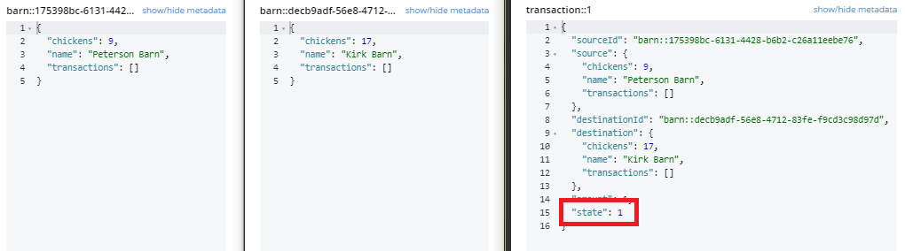
2) Change the documents
Next, we’ll actually perform the necessary mutations to the barn documents. Subtracting a chicken from the source barn, and adding a chicken to the destination barn. At the same time, we’re going to "tag" these barn documents with the transaction document ID. Again, you’ll see why this is important later.
UpdateWithCas<Barn>(source.Id, x => { x.Chickens -= amountToTransfer; x.Transactions.Add(transaction.Id); });
UpdateWithCas<Barn>(destination.Id, x => { x.Chickens += amountToTransfer; x.Transactions.Add(transaction.Id); });At this point, a chicken has been transferred between barns. But also notice the transaction "tag" on the barns.
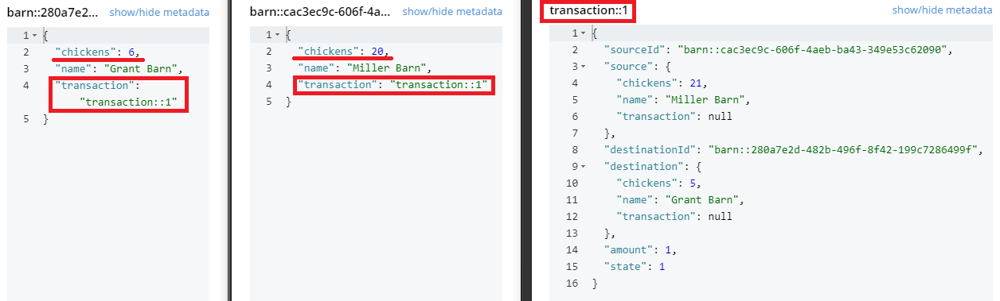
3) Switch to committed
So far, so good. The mutations are complete, so it’s time to mark the transaction as "committed".
UpdateWithCas<TransactionRecord>(transaction.Id, x => x.State = TransactionStates.Committed);The only thing that changes now is the "state" of the transaction.
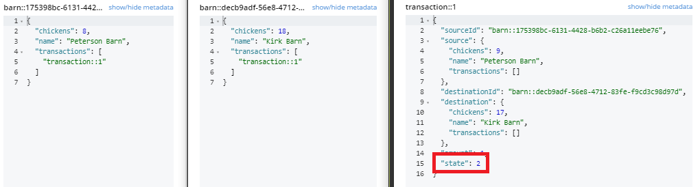
4) Remove transaction tags
Now that the transaction is committed, the barns no longer need to know that they’re part of a transaction. So remove those "tags" from the barns.
UpdateWithCas<Barn>(source.Id, x => { x.Transactions.Remove(transaction.Id); });
UpdateWithCas<Barn>(destination.Id, x => { x.Transactions.Remove(transaction.Id); });Now the barns are free from the transaction.
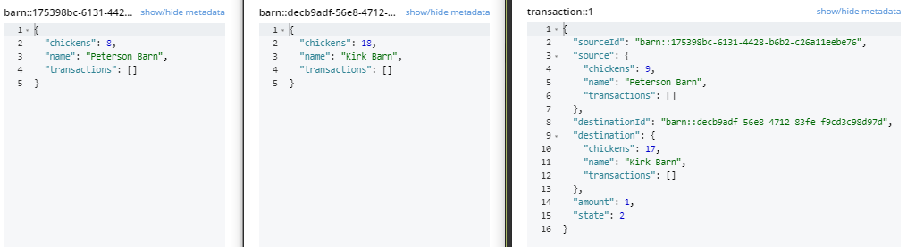
5) Transaction is done
The last step is finalize the transaction. Change its state to "done".
UpdateWithCas<TransactionRecord>(transaction.Id, x => x.State = TransactionStates.Done);If we’ve gotten this far, then the transaction is complete. The barns have the correct number of chickens after the transfer.

Rollback: what if something goes wrong?
It’s entirely possible that something goes wrong during a transaction. That’s the entire point of a transaction, really. All the operations happen, or they don’t.
I’ve put the code for steps 1 through 5 above inside of a single try/catch block. An exception could happen anywhere along the way, but let’s focus on two critical points.
Exception during "pending" - How should we handle if an error occurs right in the middle of step 2. That is, AFTER a chicken is subtracted from the source barn but BEFORE a chicken is added to the destination barn. If we didn’t handle this situation, a chicken would disappear right into the aether and our game players would cry fowl!
Exception after transaction "committed" - The transaction has been marked as committed, but an error occurs before the transaction tags are removed from the barns. If we didn’t handle this, then it might appear from other processes that the barns are still inside of a transaction. So the first chicken transfer would be successful, but no further chickens could be transferred.
But these problems can be dealt with inside of the catch block. This is where the "state" of the transaction comes into play (as well as the transaction "tags").
Exception during "pending"
This is the situation that would lose chickens and make our gamers angry. The goal is to replace any lost chickens and get the barns back to the state they were before the transaction.
Let’s assume it happens right in the middle. For this example, we’ve got a new transaction: transfer 1 chicken from Jefferson barn (18 chickens) to Jones barn (22 chickens).
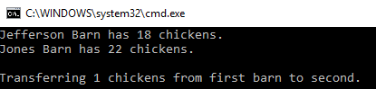
An error happened right in the middle. The source barn has one less chicken, but the destination barn didn’t get it.
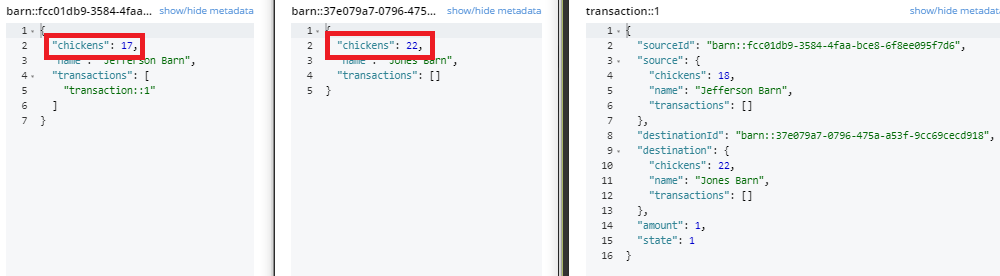
There are 3 total steps to recovery.
1) Cancel transaction
Change the state of the transaction to "cancelling". Later we’ll change it to "cancelled".
UpdateWithCas<TransactionRecord>(transaction.Id, x => x.State = TransactionStates.Cancelling, transactionRecord.Cas);The only thing that’s changed so far is the transaction document:
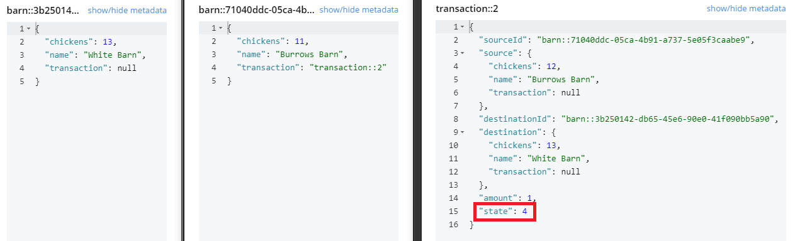
2) Revert changes
Next, we need to revert the state of the barns back to what they were before. Note that this is ONLY necessary if the barn has a transaction tag on it. If it doesn’t have a tag, then we know it’s already in its pre-transaction state. If there is a tag, it needs to be removed.
UpdateWithCas<Barn>(source.Id, x =>
{
if (x.Transactions.Contains(transaction.Id))
{
x.Chickens += amountToTransfer;
x.Transactions.Remove(transaction.Id);
}
});
UpdateWithCas<Barn>(destination.Id, x =>
{
if (x.Transactions.Contains(transaction.Id))
{
x.Chickens -= amountToTransfer;
x.Transactions.Remove(transaction.Id);
}
});Now the barns are back to what they were before.
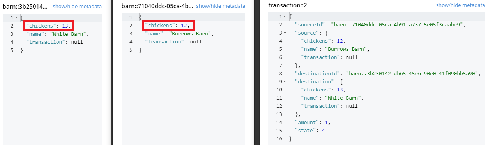
3) Cancelled transaction
At this point, the only thing left to do is to set the transaction to "cancelled".
UpdateWithCas<TransactionRecord>(transaction.Id, x => x.State = TransactionStates.Cancelled);And now, the transaction is "cancelled".
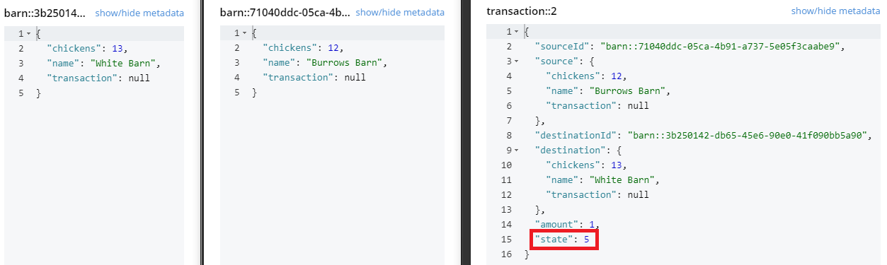
The total number of chickens in the game has been preserved. At this point, you still need to handle the error that caused the need for a rollback. Maybe you’ll retry, notify the players, log an error, or all of the above.
Exception during "committed"
Now let’s look at another case: the barns are mutated, but they have not yet had their transaction tags removed. Assuming the game logic cares about these tags, future transactions might not be possible. So the starting state would look like:
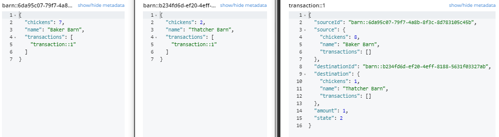
The way to handle this is straightforward: Perform another transaction, but this time switch the destination and source.
var helper = new TransactionHelper(_bucket, false, false);
helper.Perform(destination, source, 1);This will create another helper, call the Perform method, and run the exact same transaction in reverse.
Problems and edge cases
This simplified example may be just the trick for your application, but there are a lot of edge cases to think about.
What if the process dies part way through? This means that the catch block may not even be reached. You may need to check for any uncompleted transaction upon application startup and perform recovery there. Or possibly have a different watchdog process that looks for incomplete transactions.
What state is everything left it? Who’s responsibility is it to complete / rollback pending transactions?
What happens if the same document is part of two transactions concurrently? Are you going to build in logic to prevent this, or are you going to build in logic to allow this?
The sample contains all the state for rolling back. But if you were to implement more transaction types (maybe you want to transfer cows)? You’d need a transaction type identifer too.
Other edge cases. What happens if there’s a node in your cluster that fails in the middle of the transaction? What happens if you can’t get the locks you want? How long do you keep retrying? There are lots and lots of edge cases to deal with. You should thoroughly test all the conditions you expect to encounter in production. And in the end, you might want to consider some sort of mitigation strategy. If you detect a problem, or a bug is reported, maybe you can just give some free chickens to all parties involved after you fix the bug.
Other options
Our engineering team has been experimenting with RAMP client-side transactions. RAMP (Read Atomic Multi-Partition) is a way to guarantee atomic visibility in distributed databases. For more information, check out RAMP Made Easy by Jon Haddad or Scalable Atomic Visibility with RAMP Transactions by Peter Bailis.
The most mature examples put together for Couchbase is from Subhashni Balakrishnan using the Java SDK.
Another option is the open-source NDescribe library by Iain Cartledge (who is a Couchbase community champion).
Finally, check out the Saga Pattern, which is especially helpful for transactions among microservices.
Conclusion
This blog post talked about how to use the ACID primitives available to Couchbase to create a kind of atomic transaction for a distributed database. This is still not a completely solid replacement for ACID, but it is sufficient for what the vast majority of modern microservices-based applications need. For the small percentage of use cases that need additional transactional guarantees, Couchbase will continue to innovate further.
Thanks to Mike Goldsmith, x, y, and z who helped to review this blog post.
If you are eager to take advantage of the benefits of a distributed database like Couchbase, but still have concerns about transactions, please reach out to us! You can ask questions on the Couchbase Forums or you can contact me on Twitter @mgroves.